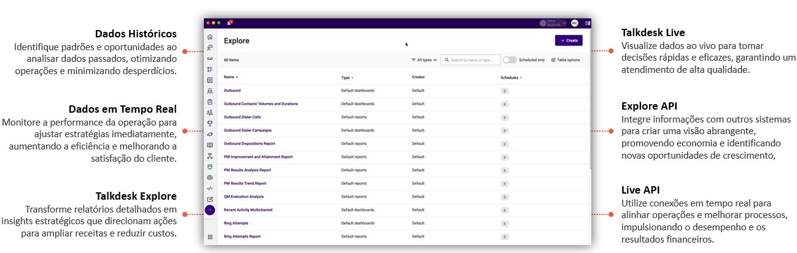

Use dados em tempo real e históricos com o Talkdesk Reporting para otimizar operações e decisões estratégicas, integrando tudo via APIs Explore e Live.
Registra automaticamente informações de chamadas, mensagens e interações omnichannel, como tempo de espera, duração e resultados.
Usa o Explore para organizar dados em relatórios detalhados e o Live para monitoramento instantâneo, com refresh de até 5 minutos.
Permite criar relatórios customizados via interface intuitiva, com filtros, métricas (ex.: ASA, CSAT) e visualizações ajustáveis.
Disponibiliza dashboards e relatórios na plataforma, com opções de download (CSV, JSON) e agendamento de envio.
Conecta-se a CRMs e sistemas BI, unificando dados para análises mais amplas e estratégicas.
Esse diferencial posiciona a Talkdesk como uma escolha superior, oferecendo valor único frente às soluções padrão de mercado.